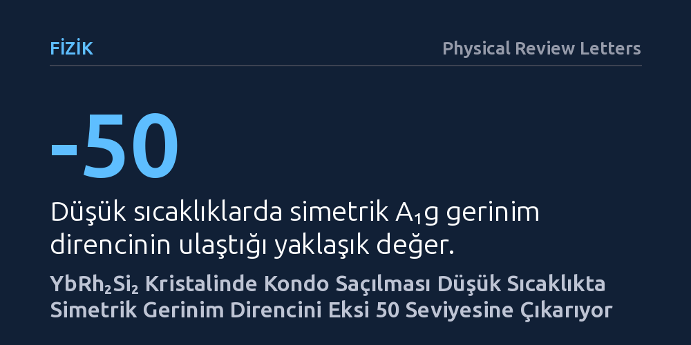

FIZIK · Physical Review Letters · 2026-10-14
Araştırmacılar, YbRh₂Si₂ kristalinde mekanik gerinimin Kondo saçılması ve kuantum kritikliği üzerindeki etkilerini farklı sıcaklık ve manyetik alanlarda inceledi. Ölçümler, simetriyi koruyan gerinim direncinin düşük sıcaklıklarda eksi 50 değerine yaklaşarak manyetik entropi değişimini ve kuantum kritikliğini doğrudan yansıttığını gösterdi.
Elektronların dolandığı karmaşık kuantum hallerinin ve kuantum kritik geçişlerin, kristal yapıyı bozmadan yalnızca mekanik çekme ve sıkıştırma yoluyla hassas biçimde kontrol edilebileceğini gösteriyor.

Katı hal fiziğinde elektronların birbirleriyle güçlü şekilde etkileştiği ağır fermiyon metalleri, kuantum mekaniğinin en sıradışı davranışlarına ev sahipliği yapar. Bu sistemlerde elektronlar, kristal örgüsündeki manyetik atomlarla öylesine güçlü bir bağ kurar ki sanki normal kütlelerinin yüzlerce katına ulaşmış devasa parçacıklar gibi davranırlar. Bu duruma Kondo etkisi adı verilir. Malzeme mutlak sıfıra yakın sıcaklıklara soğutulduğunda, manyetik düzen ile kuantum dalgalanmaları arasında çok hassas bir denge kurulur ve bu dengenin sınırında kuantum kritik nokta ortaya çıkar.
Fizikçilerin uzun süredir yanıt aradığı temel soru, bu karmaşık elektron dolanıklığının ve kuantum kritik geçişlerin dış müdahalelerle nasıl yönlendirilebileceğidir. Genellikle kimyasal katkılama veya yüksek manyetik alan gibi yöntemler kullanılır; ancak bu yöntemler malzemenin kristal yapısını bozabilir veya yapıya istenmeyen safsızlıklar katar. Kristali bozmadan sadece dışarıdan sıkıştırıp çekmek, yani mekanik gerinim uygulamak, elektronların örgü içindeki etkileşimlerini değiştirmek için son derece temiz bir yol sunar. Ne var ki mekanik gerinimin elektron saçılması üzerindeki net etkisi bugüne kadar ayrıştırılamamıştı.
Araştırmacılar bu soruyu aydınlatmak için ağır fermiyon sistemlerinin en bilinen prototiplerinden biri olan ytterbiyum-rodyum-silisyum (YbRh₂Si₂) kristalini incelediler. Kristale belirli doğrultularda mekanik kuvvet uygulandığında elektriksel direncin nasıl değiştiğini takip eden elastodirenç tekniğinden yararlandılar. Deneyde kristal, dörtgen simetri eksenleri olan [100] ve [110] doğrultuları boyunca tek eksenli gerinime tabi tutuldu.
Gerinim altındayken kristalden geçen akıma paralel (boyuna) ve dik (enine) doğrultularda elektriksel direnç ölçümleri alındı. Bu ölçümler birleştirilerek kristalin simetrisini koruyan izotropik A₁g kanalı ile simetriyi kıran B₁g ve B₂g kanallarındaki gerinim direnci tepkileri birbirinden ayrıştırıldı. Deneyler, sıcaklık 2 Kelvin seviyesine kadar düşürülerek ve farklı dış manyetik alanlar uygulanarak tekrarlandı.
Elde edilen sonuçlar beklenmedik bir tablo ortaya koydu. Kristalin biçimini bozup simetrisini kıran kanallardaki direnç değişimleri neredeyse önemsiz düzeyde kalırken, kristalin hacmini her yönde simetrik etkileyen A₁g kanalında devasa bir artış gözlendi. Sıcaklık düştükçe simetrik gerinim direnci hızla büyüyerek mutlak değerce eksi 50 seviyesine kadar yaklaştı.
Bu büyüklük, sıradan iletken metallerde rastlanan tipik gerinim direnci değerlerinin katbekat üzerindedir. Araştırmacıların gerçekleştirdiği ölçekleme analizleri ve çizgisel ısıl genleşme ölçümleriyle yapılan karşılaştırmalar, bu güçlü tepkinin doğrudan Kondo saçılmasından kaynaklandığını kanıtladı. Mekanik gerinim, malzemenin manyetik entropisini doğrudan değiştiriyor ve bu durum elektronların saçılma hızına çok belirgin bir elektriksel direnç artışı olarak yansıyordu.
Bu bulgular, gerinim direncinin yalnızca basit bir piezoelektrik tepkisi olmadığını, elektron dolanıklığının termodinamik durumunu yansıtan son derece hassas bir gösterge olduğunu gösteriyor. Özellikle 2 Kelvin seviyesine soğutulduğunda gözlenen sinyaller, hem mekanik gerinimin hem de manyetik alanın kuantum kritik noktayı birlikte denetleyebildiğini ortaya koyuyor.
Çalışma, elektronların birbiriyle güçlü korelasyon içinde bulunduğu malzemelerde, kristal simetrisine dayalı gerinim ölçümlerinin kuantum faz geçişlerini haritalandırmak adına güçlü bir yöntem sunduğunu kanıtlıyor. Gelecekte benzer yaklaşımlar kullanılarak yüksek sıcaklık süperiletkenleri ve egzotik kuantum mıknatısları gibi karmaşık malzemelerin iç dinamikleri çok daha temiz ve tahribatsız bir biçimde aydınlatılabilir.